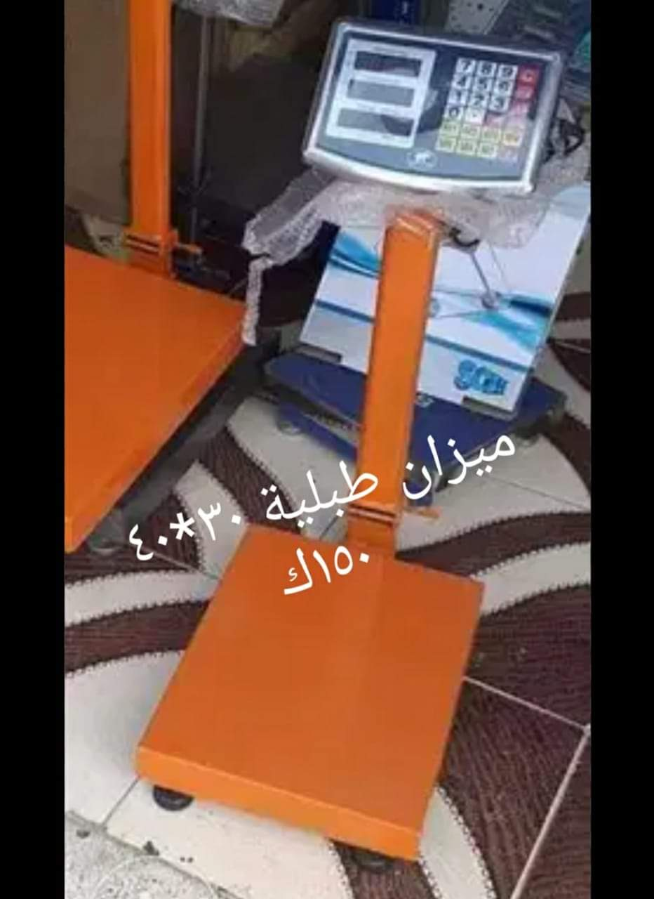

موازين أرضية
موازين منصة أرضية بشاشة قائمة
هذا النوع مناسب لوزن الكراتين والشكاير والبضائع اليومية، مع شاشة قراءة واضحة وقاعدة ثابتة تسهّل الاستخدام داخل المحلات والمخازن.
- مناسب للوزن اليومي السريع مع قراءة ظاهرة للعميل
- يشمل موديلات منصة كاملة وموديلات مدمجة بمقاسات عملية
- يفيد في المحلات والمخازن ونقاط الاستلام والبيع